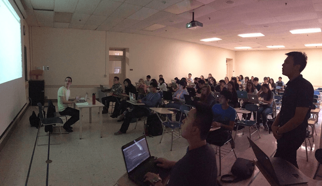
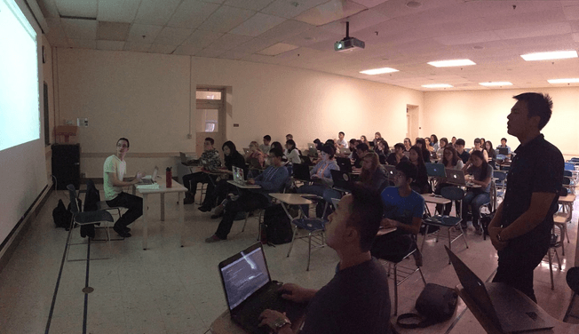

About
Open Web is a student organization at Boston University that was founded in 2014 with the goal to bring highly motivated students together to work on apps and other tech projects. We are an app incubator - a closed organization where people develop projects and apps in small but driven teams. You can read more about the founders' original vision here.
To join our team, you'll need to apply . Even if you don't join us, we organize plenty of workshops and events open to the entire BU community Make sure that you're subscribed to our mailing list and follow our Facebook page, so you don't miss any updates! You may also find us on Facebook, Twitter, Medium, and Instagram. If you have any questions, you can email us at openweb@bu.edu
 
